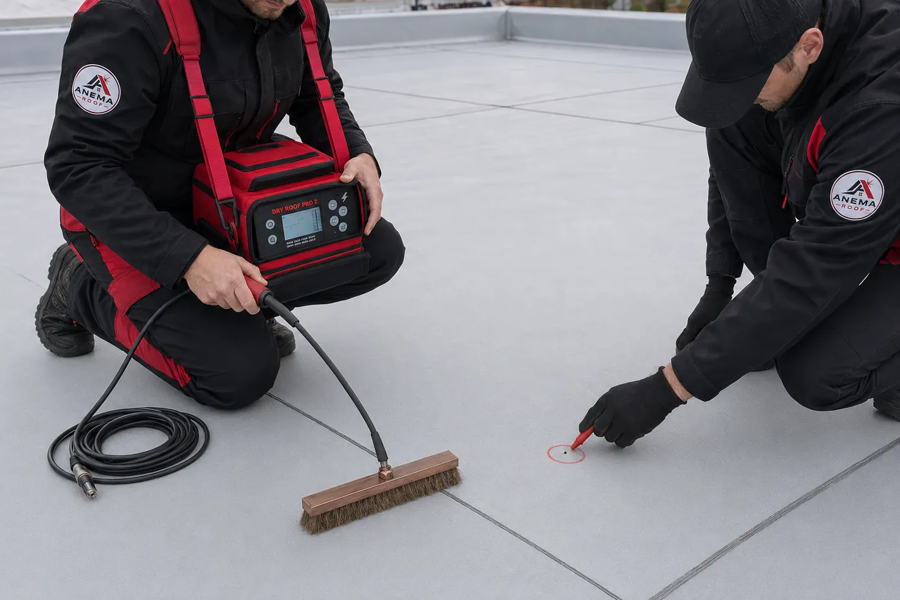
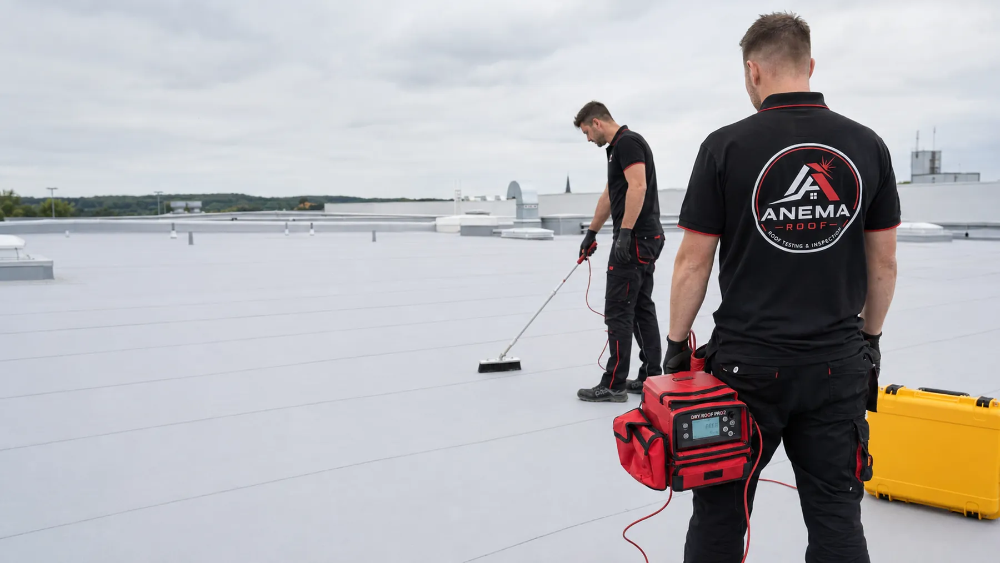
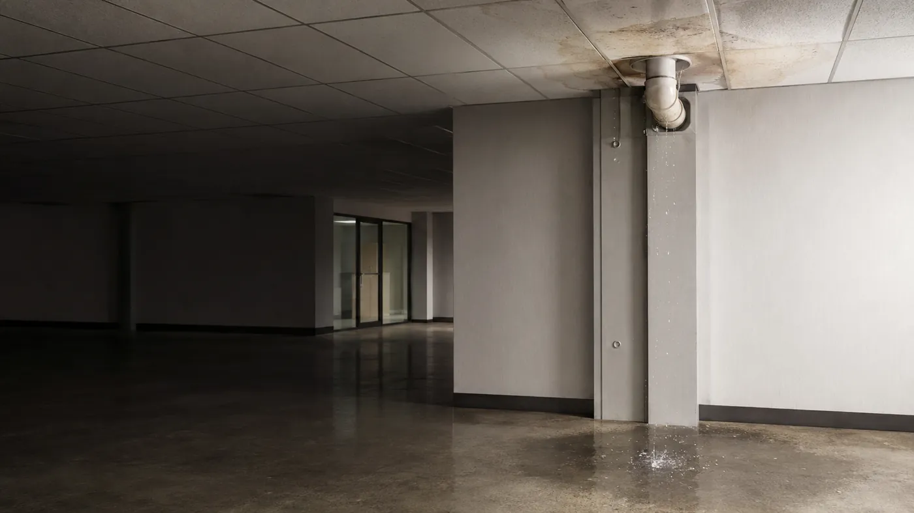
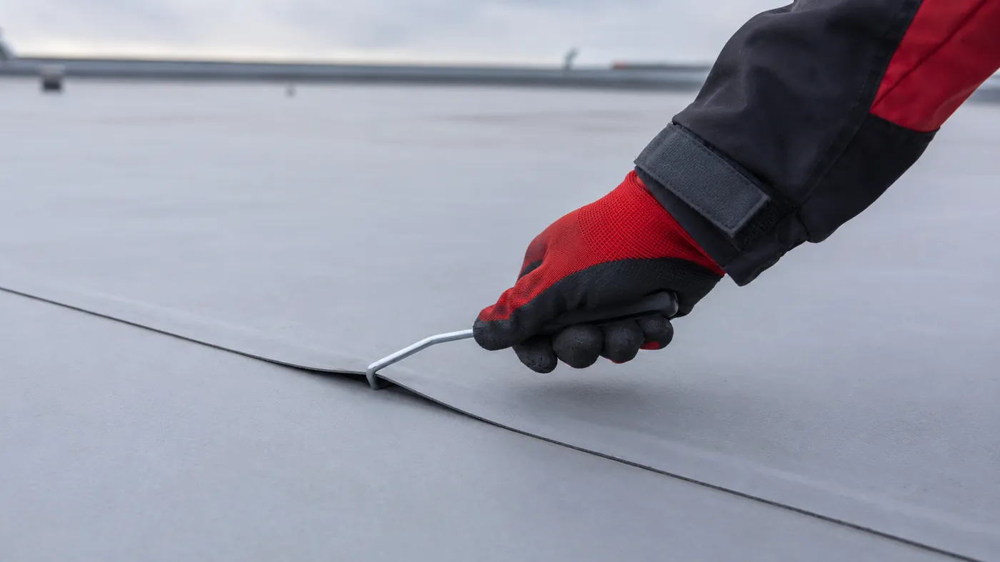

Jiskrová zkouška
Rychlá kontrola velkých ploch střechy.
Odhalí malé dírky, praskliny a další netěsnosti, které pouhým okem neuvidíte. Nalezené místo přístroj okamžitě ohlásí a označíme ho k opravě.

Jiskrové a jehlové zkoušky plochých střech
Přesná kontrola hydroizolace, označení netěsností, lokální oprava a přehledný výstup pro správu objektu.
Proč střechu kontrolovat včas
Stačí malá dírka ve střešní fólii a voda se dostane dovnitř střechy. Dlouho nemusí být nic vidět. Když se problém neřeší, voda postupně poškozuje izolaci, konstrukci i vnitřní prostory.
Včasná kontrola může zabránit rozsáhlé opravě.

Dvě doplňující se metody

Rychlá kontrola velkých ploch střechy.
Odhalí malé dírky, praskliny a další netěsnosti, které pouhým okem neuvidíte. Nalezené místo přístroj okamžitě ohlásí a označíme ho k opravě.

Kontrola spojů a svarů střešní fólie.
Sondou prověříme, zda je svar pevný po celé délce. Odhalíme nedovařená nebo uvolněná místa, kudy by mohla pronikat voda.
Od nálezu k ověřené opravě
Skladba střechy, materiál, suchý povrch a uzemnění.
Plocha jiskrově, svarové spoje mechanickou sondou.
Každá porucha dostane jasné místo a záznam.
Záplata, oprava svaru nebo problematického detailu.
Ověření výsledku, protokol a doporučení dalšího postupu.
Kdy dává kontrola největší smysl
Sedí na váš objekt aspoň jeden bod?
Domluvit kontroluČasté dotazy
Nenašli jste svůj dotaz? Zavolejte — na skladbu střechy a vhodnou metodu se nejlíp odpovídá po telefonu.
773 938 959Ano. Jiskrová zkouška potřebuje suchý povrch a funkční uzemnění. Proto je prvním krokem posouzení vhodnosti metody — podíváme se na skladbu střechy, materiál hydroizolace, stav povrchu a možnost uzemnění.
Každá hlídá jiné riziko. Jiskrová zkouška rychle prověří velké plochy a odhalí dírky, praskliny a netěsnosti, které pouhým okem neuvidíte. Jehlová zkouška se soustředí na spoje a svary — sondou ověříme, jestli je svar pevný po celé délce a nikde není nedovařený nebo uvolněný. Na většině střech dávají smysl obě dohromady.
Přehled nalezených vad, fotodokumentaci každého místa, záznam o provedené opravě a doporučení dalšího postupu. Výstup je připravený tak, aby s ním mohl pracovat správce objektu i investor.
Dle dohody ano — záplata, oprava svaru nebo problematického detailu. Opravu potom znovu zkontrolujeme, aby bylo ověřené, že místo skutečně těsní. Nález tedy nekončí označením křídou.
Nejčastěji před převzetím nové střechy, před zakrytím fólie další vrstvou, při podezření na zatékání, po krupobití či vichřici, po pohybu jiných profesí po střeše a pravidelně jako prevence. Řada správců ji zadává i kvůli požadavkům pojistných podmínek.
Cenu i termín určuje plocha střechy, její členitost, skladba a dostupnost. Napište nám rozměry a typ objektu — konkrétní nabídku pošleme zpravidla do jednoho pracovního dne.
Kontakt
Napište nám nebo zavolejte. Probereme skladbu střechy, vhodnou metodu a domluvíme termín kontroly.